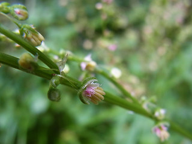
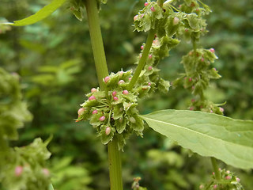
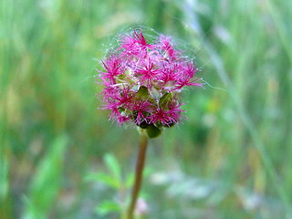
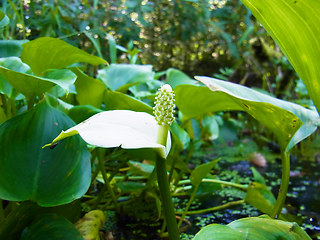
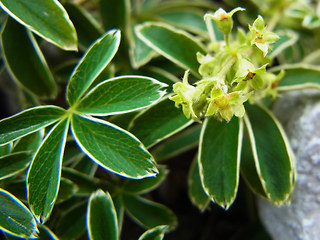

Wildpflanzen
Bestimmung
Register
Systematik
<
Grüne bis vier Blütenblätter
>
Grüne bis vier Blütenblätter

Schild Ampfer / Rumex Scutatus

Stumpfblättriger Ampfer / Rumex Obtusifolius
Aufrechte Glaskraut / Parietaria Officinalis

Kleiner Wiesenknopf / Sanguisorba Minor
Groβe Brennnessel / Urtica Dioica

Schlangenwurz / Calla Palustris

Glanz Frauenmantel / Alchemilla Nitida
nach oben